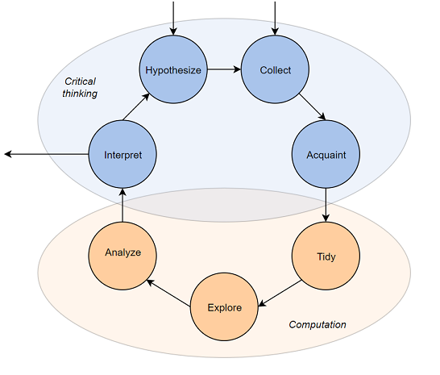

| species | body_wt | brain_wt | |
|---|---|---|---|
| 0 | Africanelephant | 6654.000 | 5712.0 |
| 1 | Africangiantpouchedrat | 1.000 | 6.6 |
| 2 | ArcticFox | 3.385 | 44.5 |
2025-08-12
Data Science Lifecycle
Working with tabular data
Data visualization
Python Jupyter notebooks using pandas and seaborn
Goal is to be hands-on
Much of the material is borrowed/distilled from PSTAT 100 notes courtesy of Trevor Ruiz
Data science encompasses a wide range of activities that involve uncovering insights from quantitative information.
People that refer to themselves as data scientists typically combine specific interests (“domain knowledge”, e.g., biology) with computation, mathematics, and statistics and probability to contribute to knowledge in their communities.
Data science lifecycle: an end-to-end process resulting in a data analysis product
These form a cycle in the sense that the steps are iterated for question refinement and futher discovery.

The point isn’t really the exact steps, but rather the notion of an iterative process.
-> Pandas basics in Google Colab/Jupyter
The scaling of brains with bodies is thought to contain clues about evolutionary patterns pertaining to intelligence.
There are lots of datasets out there with brain and body weight measurements, so let’s consider the question:
What is the relationship between an animal’s brain and body weight?
Allison et al. 1976 provide average body and brain weights for 62 mammals:
| species | body_wt | brain_wt | |
|---|---|---|---|
| 0 | Africanelephant | 6654.000 | 5712.0 |
| 1 | Africangiantpouchedrat | 1.000 | 6.6 |
| 2 | ArcticFox | 3.385 | 44.5 |
Units of measurement
How well-matched is the data to our question?
Based on the great points you just made, we really only stand to learn something about this particular sample of animals.
In other words, no inference is possible.
Do you think the data are still useful?
This dataset is already impeccably neat: each row is an observation for some species of mammal, and the columns are the two variables (average weight).
So no tidying needed – we’ll just check the dimensions and see if any values are missing.
Visualization is usually a good starting point for exploring data.
The few outliers skew the visuals so that we cannot discern the big clump around \((0, 0)\) – that suggests we shouldn’t look for a relationship on the scale of kg/g.
A simple log-log transformation of the axes reveals a clearer pattern.
The plot shows us that there’s a roughly linear relationship on the log scale:
\[\log(\text{brain}) = \alpha \log(\text{body}) + c\]
So what does that mean in terms of brain and body weights? A little algebra gives us a “power law”:
\[(\text{brain}) \propto (\text{body})^\alpha\]
Check your understanding: what’s the proportionality constant?
So it appears that the brain-body scaling is well-described by a power law:
among selected specimens of these 62 species of mammal, species average brain weight is approximately proportional to a power of species average body weight
Compare to poorly worded versions like:
Question refinement: we can now ask further, more specific questions:
Do other types of animals exhibit the same power law relationship?
To investigate, we need richer data.
A number of authors have compiled and published ‘meta-analysis’ datasets by combining the results of multiple studies.
Below we import a few of these for three different animal classes.
Where does this data come from? It’s kind of a convenience sample of scientific data:
So these data, while richer, are still relatively narrow in terms of generalizability.
Cannot do general inferences (e.g., to all animals, all mammals, etc.) because they weren’t collected for the purpose to which we’re putting them.
Usually, if data are not collected for the explicit purpose of the question you’re trying to answer, they won’t constitute a representative sample.
This dataset has quite a lot of missing brain weight measurements: many of the underlying studies combined to form these datasets did not include that particular measurement.
Focusing on the non-missing values, we see the same power law relationship but with different proportionality constants and exponents for the three classes of animals.
So we might hypothesize that:
\[ (\text{brain}) = \beta_1(\text{body})^{\alpha_1} \qquad \text{(mammal)} \\ (\text{brain}) = \beta_2(\text{body})^{\alpha_2} \qquad \text{(reptile )} \\ (\text{brain}) = \beta_3(\text{body})^{\alpha_3} \qquad \text{(bird )} \]
It seems that the average brain and body weights of the birds, mammals, and reptiles measured in these studies exhibit distinct power law relationships.
\[\beta_i \neq \beta_j, \quad \alpha_i \neq \alpha_j \quad \text{for } i \neq j \]
What would you be interested in investigating next?
Notice that the word ‘model’ is never mentioned
This was intentional — it is a common misconception that analyzing data always involves fitting models.
This example illustrates the aspects of the lifecycle:
Data science emerged as a term of art in the last decade
Interest exploded in the last five years
Origins: ‘data analysis’: In 1960s Tukey advocated for ‘data analysis’ as a broader field than statistics:
statistical theory and methodology;
visualization and data display techniques;
computation and scalability;
breadth of application.
Tukey’s ‘data analysis’ is proto-modern data science. In the 1960’s and 1970’s:
visualization meant drawing
computation meant data re-expression by hand
The “confirmatory” approach of the classical inferential framework.
statistical model determined by experimental design
analysis based on statistical theory.
output is a decision
The new techniques allowed for iterative investigation:
formulate a question
examine data graphics and summaries
adjust computations and graphics to hone in on content of interest
refine the question
From 1960-2010, adopters of the ‘data analysis as a field’ view were largely industry practitioners. Their ideas evolved into an alternative approach:
data-driven rather than theory-driven;
iterative rather than conclusive.
In the meantime, computer scientists advanced the field of machine learning
Iterative problem-solving together with applied machine learning was codified into an academic discipline in the early 21st century.
The “exploratory” approach of iterative modern data analysis.
outputs are findings
statistical model determined by data
analysis techniques include empirical methods
In the 2000s and especially after 2010, the iterative approach enjoys broader applicability than it used to:
due to automated and/or scalable data collection
observational data is widely available across domains
and includes large numbers of variables
highly specialized data problems evade methodology with theoretical support
more accessible to analysts without advanced statistical training
Machine learning advanced modern predictive modeling, most notably in the past 15 years:
neural networks and deep learning
optimization
algorithmic analysis
Usually work with tabular data: Many ways to structure a dataset according to
Because of the wide range of possible layouts for a dataset, and the variety of choices that are made about how to store data, data scientists are constantly faced with determining how best to reorganize datasets in a way that facilitates exploration and analysis.
Next class: tidy data format and basics of dataframes in pandas